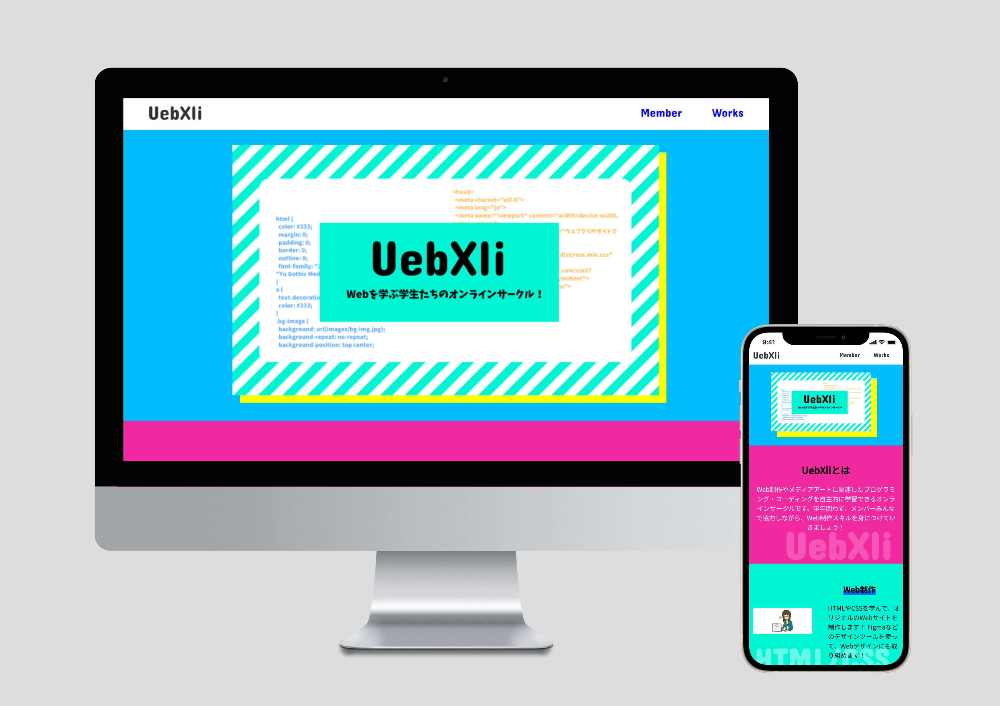
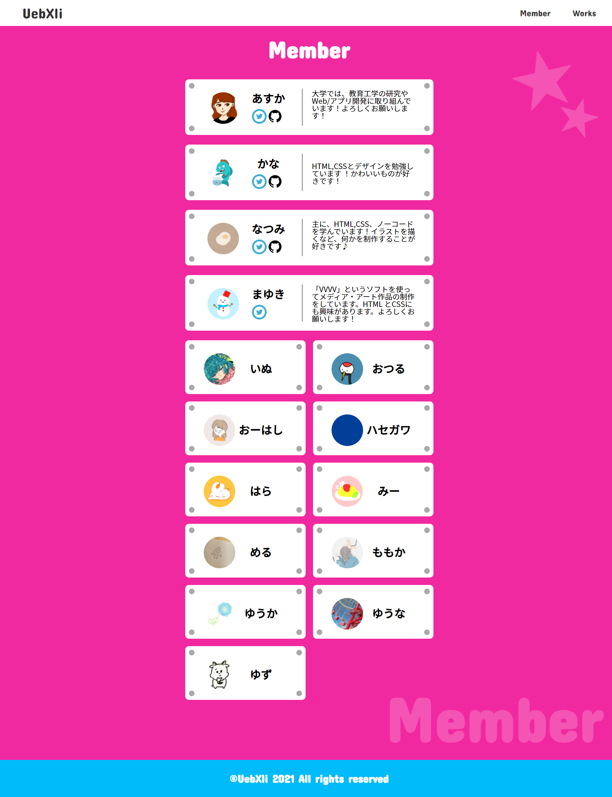
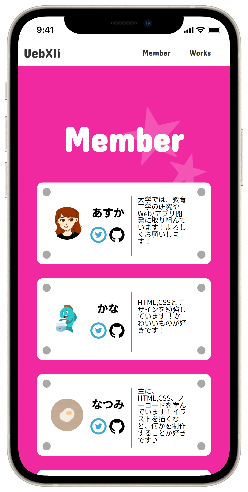
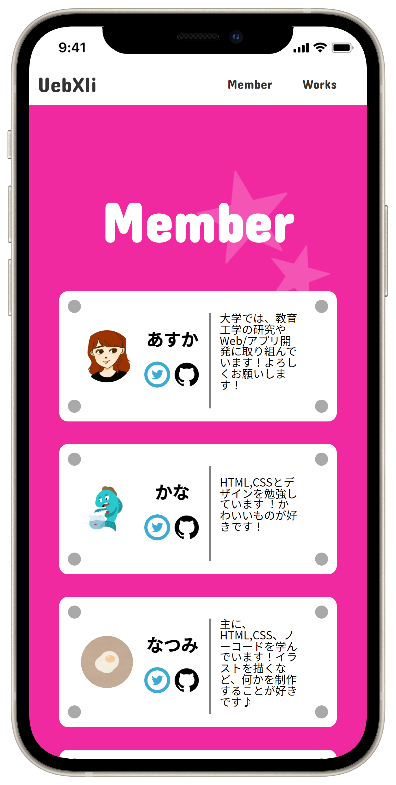

#03 - UebXli
学内のサークル、ウェブクリの2021年版サイトです。
ウェブクリでは、授業外でもプログラミングを学びたいという
情報メディア学科の生徒が集まり１回勉強会を行います。
このサークルで運営として活動していた際に、他の運営メンバーと
共同で制作しました。
「楽しそう」というイメージをもって貰うためにカラフルな色合いに
なるようにしました。私はメンバー紹介ページを担当しました。
2021/2 ~
-Tools-
HTML/CSS Figma


